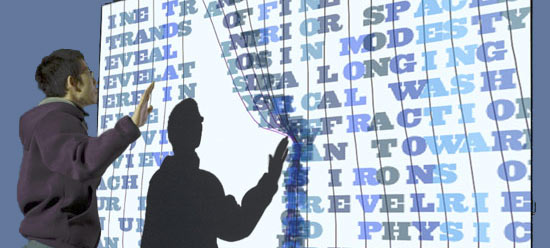

A project-oriented workshop exploring text and language art in computational media. Lectures will address aesthetic, conceptual, and technical concerns arising at the intersection of coding, creative writing, and artistic practice. Assignments and projects will focus primarily on textual media, but will also address sound, image, video, and installation.
Course #: SM2289
Time/Location: Mon. 4-6:50
Instructor: Daniel Howe (danihowe-AT-cityu.edu.hk)
Assistant: Kenny Wong (kennyviperhk-AT-gmail.com)
REQUIREMENTS
Students will be expected to arrive on time to all sessions, complete all assignments, and actively contribute to class critiques and discussion. Unless otherwise specified, cell phone use is not allowed in class. More than one unexcused absence and you risk failing the class.
|  |
| ©howe |
'The ideas need not be complex. Most ideas that are successful are ludicrously simple. Successful ideas generally have the appearance of simplicity because they seem inevitable.' -Sol Lewitt